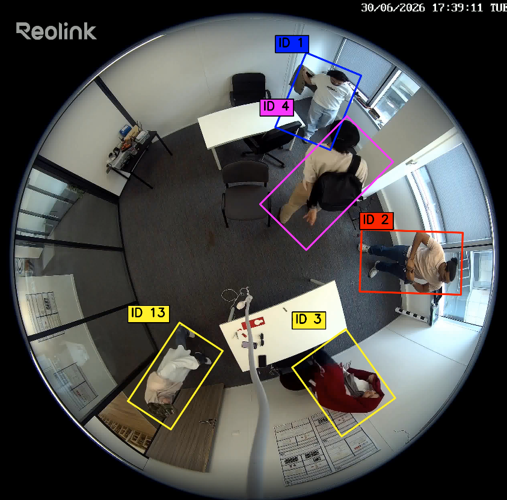
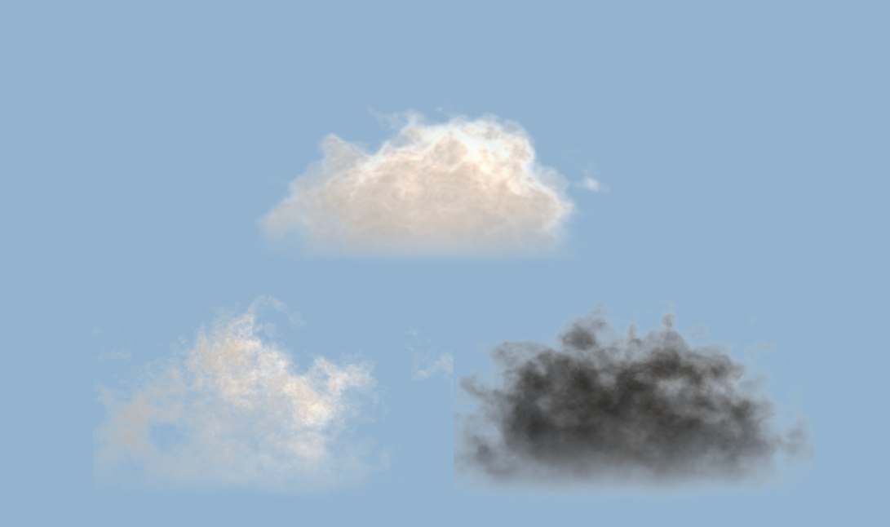
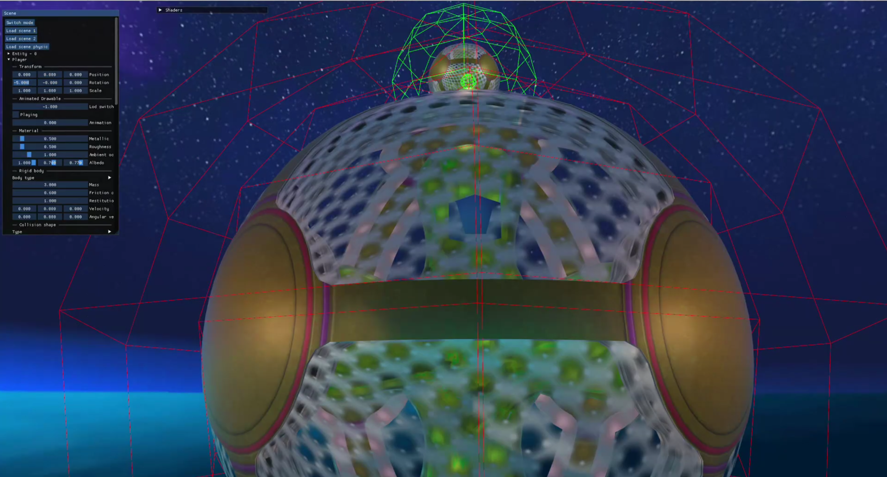
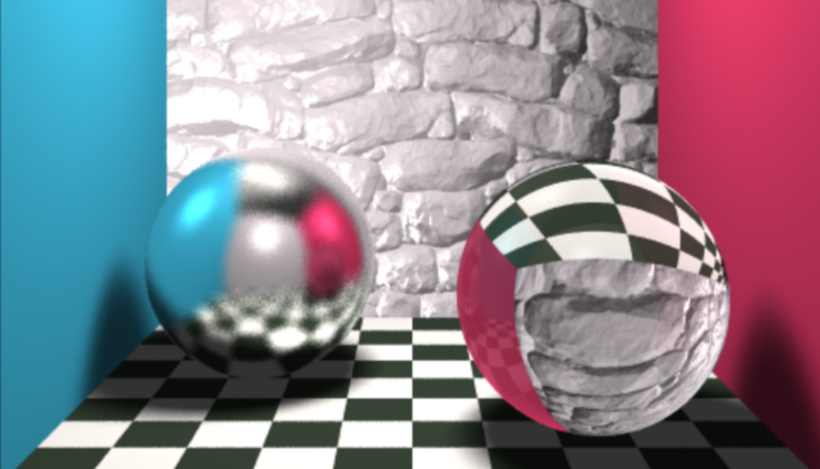
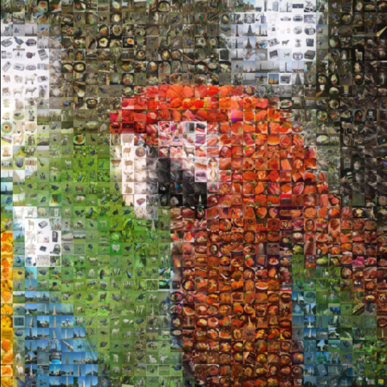
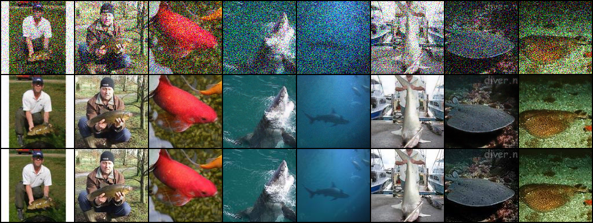
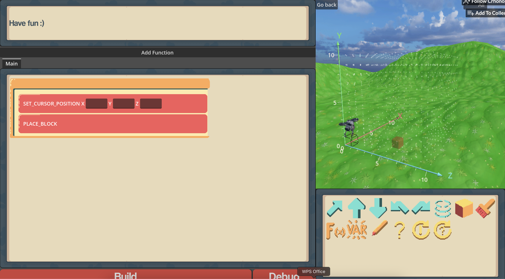
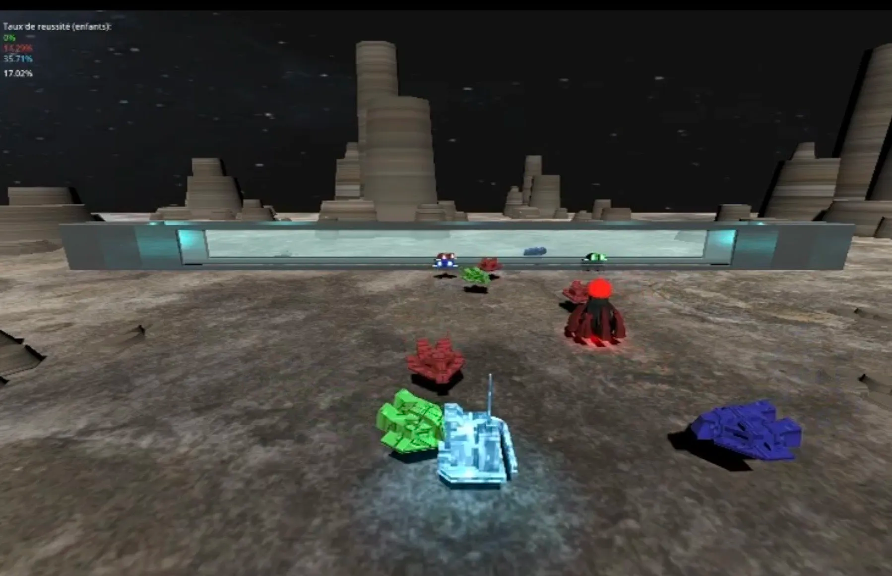

Featured Projects

FiTAC-MOT
Fisheye multi-object tracking under clothing and appearance changes with learned temporal memory.

Volumetric Clouds
Ray marching with 3D noise, lighting & phase functions.

Game Engine
Cook-Torrance, GGX, prefiltered env, irradiance map (OpenGL/GLSL).

Ray Tracer
Reflection, refraction, transparency with Kd-Tree acceleration.

Photo Mosaic
Tile-based photo mosaics: average/histogram/distribution matching + batching.

Denoising Auto-Encoder with GAN
Deep-learning pipeline combining auto-encoder and adversarial training for image noise reduction.

Serious Game — Programming Puzzle (Godot)
A learning-by-doing coding puzzle game built in Godot.

Game of AI (Godot)
Agents with different strategies; evaluation, heuristics, and behavior tuning.